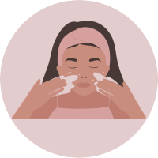
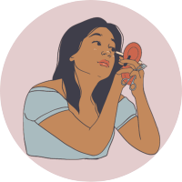
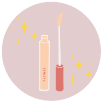

Passo 1: Prepare a Pele
Antes de aplicar o corretivo, é importante começar com a pele limpa e hidratada. Certifique-se de ter lavado o rosto e aplicado seu hidratante facial regular. Deixe o hidratante ser absorvido pela pele antes de prosseguir.

Passo 2: Escolha a Cor Certa
Escolha um corretivo que seja da mesma tonalidade da sua base ou um tom ligeiramente mais claro. Isso ajudará a corrigir as imperfeições sem destacar a área.
Passo 3:
Olhe atentamente para o seu rosto e identifique as áreas que precisam de correção. Isso pode incluir manchas, olheiras, espinhas ou qualquer outra imperfeição.
Passo 4: Aplique o Corretivo
Use um pincel de corretivo ou seus dedos para aplicar o corretivo nas áreas que você identificou. Aplique o produto em pequenos pontos ou traços, em vez de grandes quantidades, para garantir uma aplicação uniforme.

Passo 5: Dê Batidinhas para Espalhar
Com a ponta dos dedos ou um pincel macio, dê batidinhas suaves na área onde aplicou o corretivo. Isso ajuda a misturar o produto à sua pele de forma natural. Evite esfregar para não irritar a pele.

Passo 6: Ajuste a Quantidade
Adicione mais corretivo, se necessário, mas evite aplicar uma quantidade excessiva.
Passo 7: Defina com Pó Translúcido
Para evitar que o corretivo acumule em linhas finas e rugas, defina a área com um pouco de pó translúcido. Isso ajudará a manter o corretivo no lugar ao longo do dia.
Passo 8: Termine a Maquiagem
Continue com sua rotina de maquiagem regular. Se você usar base, aplique-a após o corretivo para obter um visual uniforme.
Lembre-se, a chave para uma aplicação de corretivo eficaz é a moderação. Comece com uma pequena quantidade de produto e vá construindo conforme necessário. Isso garantirá uma correção natural e suave.
Blush
Passo 1: Prepare a Pele
Certifique-se de que sua pele esteja limpa e hidratada. Se você já aplicou a base e o corretivo, o blush deve ser a próxima etapa.
Passo 2: Escolha a Cor Certa
Escolha um tom de blush que complemente o tom natural das suas bochechas quando você sorri. Tons rosados, pêssego e terracota são opções populares, mas a escolha da cor depende do seu tom de pele e da aparência desejada.
Passo 3: Escolha a Textura do Blush
Existem diferentes texturas de blush, como em pó, creme e líquido. Escolha a textura que melhor se adapta ao seu tipo de pele e preferência pessoal.
Passo 4: Escolha o Pincel Adequado
Use um pincel de blush de boa qualidade. Pincéis com cerdas macias e arredondadas são ideais para uma aplicação suave e difusa.
Passo 5: Dê Batidinhas no Pincel
Toque levemente o pincel no blush, removendo qualquer excesso. É mais fácil adicionar mais blush se necessário do que corrigir uma aplicação excessiva.
Passo 6: Sorria e Aplique nas Maçãs do Rosto
Sorria para destacar as maçãs do rosto. Aplique o blush com movimentos suaves, começando do meio da bochecha em direção às têmporas. Evite trazer o blush muito para baixo ou muito próximo ao nariz.
Passo 7: Misture Bem
Com movimentos leves e circulares, misture o blush na pele para evitar linhas demarcadas. Isso criará um acabamento mais natural.
Passo 8: Ajuste a Intensidade
Adicione mais blush conforme necessário para alcançar a intensidade desejada. Lembre-se, é melhor construir a cor gradualmente.
Passo 9: Defina com Pó Translúcido (Opcional)
Se quiser garantir que o blush dure mais tempo, você pode definir a área com um pouco de pó translúcido.
Passo 10: Verifique no Espelho
Dê um passo para trás e avalie o resultado no espelho para garantir que a aplicação esteja equilibrada em ambos os lados do rosto.
Contorno
Passo 1: Prepare a Pele
Certifique-se de que sua pele está limpa e hidratada. Se você já aplicou a base, corretivo e blush, o contorno deve ser a próxima etapa.
Passo 2: Escolha os Produtos Certos
Escolha um produto de contorno que seja de dois tons mais escuros que a sua base. Pode ser em creme, pó ou bastão, dependendo da sua preferência.
Passo 3: Escolha os Pincéis Adequados
Você precisará de um pincel para contorno (um pincel de contorno angular funciona bem) e um pincel para misturar.
Passo 4: Identifique as Áreas para Contornar
Identifique as áreas do rosto que você deseja esculpir. Isso geralmente inclui as laterais do nariz, abaixo das maçãs do rosto, ao longo da linha do maxilar e na linha do cabelo na testa.
Passo 5: Aplique o Contorno
Com o pincel de contorno, aplique o produto nas áreas identificadas. Evite aplicar muito produto de uma vez e lembre-se de que é mais fácil adicionar mais contorno do que corrigir um excesso.
Passo 6: Misture Bem
Use o pincel de mistura para esfumar o contorno de maneira suave e uniforme. Isso evita linhas demarcadas e cria uma aparência mais natural.
Passo 7: Contorne o Nariz (Opcional)
Se desejar afinar o nariz, aplique uma linha fina de contorno nas laterais do nariz e, em seguida, misture bem.
Passo 8: Ilumine (Opcional)
Para acentuar ainda mais as áreas esculpidas, você pode aplicar um iluminador nas áreas que deseja destacar, como o topo das maçãs do rosto, ponte do nariz, arco das sobrancelhas e centro da testa.
Passo 9: Defina com Pó Translúcido (Opcional)
Se desejar, você pode definir as áreas contornadas com um pouco de pó translúcido para garantir que o produto permaneça no lugar ao longo do dia.
Lembre-se, a chave para um contorno eficaz é a moderação. Comece com uma quantidade pequena de produto e vá construindo conforme necessário para evitar um visual muito dramático.